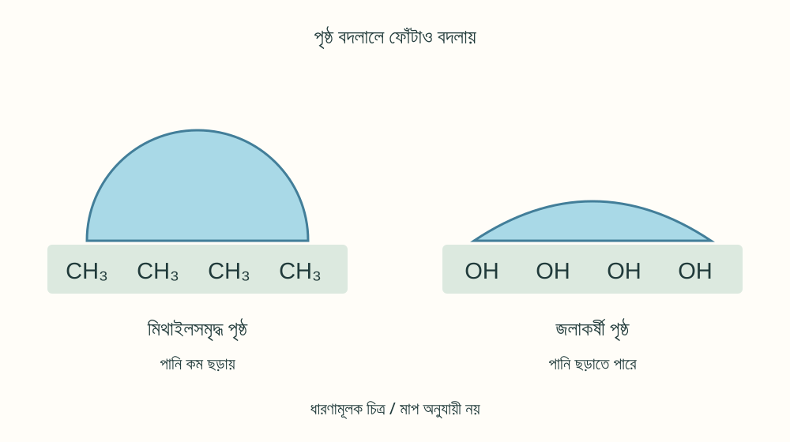
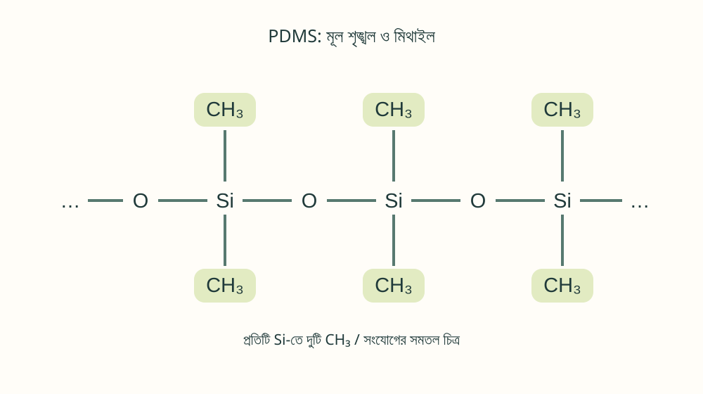
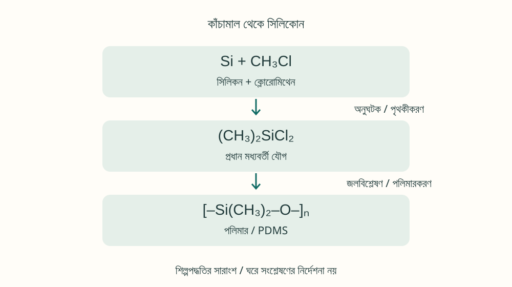

SCIENCE NOTES / K002 / MATERIALS
সিলিকোন পানি কেন ঠেকায়? মিথাইল CH₃-এর বিজ্ঞান
একটি কার্বন ও তিনটি হাইড্রোজেন কীভাবে পানির ফোঁটার আচরণ বদলায়? ছোট মিথাইল গ্রুপ থেকে কারখানার সিলিকোন পর্যন্ত—বন্ধন, পৃষ্ঠ ও কাঁচামালের গল্প।

01মিথাইল গ্রুপ কী? CH₃ নামের ছোট গঠনাংশ
সিলিকোনের ওপর পানি কেন গোল ফোঁটা হয়ে থাকে? একটি কার্বন ও তিনটি হাইড্রোজেন নিয়ে গঠিত মিথাইল গ্রুপ (–CH₃) এই প্রশ্নের একটি চাবিকাঠি। এটি আলাদা করে রাখা কোনো কাঁচামাল নয়; সাধারণত অন্য পরমাণুর সঙ্গে যুক্ত অণুর একটি অংশ।
কার্বন সাধারণত চারটি সমযোজী বন্ধন গঠন করে। মিথাইল গ্রুপে তিনটি বন্ধন হাইড্রোজেনের সঙ্গে, আর চতুর্থটি অন্য পরমাণু বা গোষ্ঠীর সঙ্গে থাকে। এখানে “–” একটি বন্ধনের রেখা, ঋণাত্মক আধানের চিহ্ন “⁻” নয়। CH₃• হলো অত্যন্ত সক্রিয় মিথাইল র্যাডিক্যাল; সেটি উপাদানের মধ্যে থাকা মিথাইল গ্রুপের মতো নয়।
R হলো যুক্ত পরমাণু বা গোষ্ঠী। মিথানল CH₃OH, ইথানল CH₃CH₂OH ও অ্যাসিটিক অ্যাসিড CH₃COOH-এও মিথাইল আছে। মিথানল ও ইথানল পানির সঙ্গে মেশে। অর্থাৎ, CH₃ থাকলেই পুরো পদার্থ পানি-বিকর্ষী হয় না; OH-এর মতো অন্য অংশও গুরুত্বপূর্ণ।
02পানি কেন ছড়ায় না? পৃষ্ঠের ভূমিকা
পানি H₂O একটি মেরু অণু; পানির অণুগুলো পরস্পরের সঙ্গে হাইড্রোজেন বন্ধন তৈরি করে। মিথাইল গ্রুপের C–H বন্ধন তুলনামূলকভাবে কম মেরু, আর এই গ্রুপ সাধারণত পানির সঙ্গে শক্তিশালী হাইড্রোজেন বন্ধন গঠন করে না। তাই পৃষ্ঠে বেশি মিথাইল প্রকাশিত থাকলে তা কম ভেজার প্রবণতা দেখায়। সিলিকোনের পানি-বিকর্ষী বৈশিষ্ট্যে মিথাইলের অবদান আছে।[1]
এটি চুম্বকের মতো পানিকে ঠেলে দেওয়া নয়। পৃষ্ঠে ছড়িয়ে পড়ার বদলে ফোঁটা হয়ে থাকলে মোট আন্তঃপৃষ্ঠীয় শক্তি কম হতে পারে। ভেজার একটি সূচক হলো সংস্পর্শ কোণ: ফোঁটার কিনারায় কঠিন পৃষ্ঠ ও পানির পৃষ্ঠের স্পর্শকের মধ্যে, পানির দিক থেকে মাপা কোণ। কোণ বড় হলে সাধারণত পৃষ্ঠ কম ভেজে।
খসখসে ভাব, ময়লা, অন্য রাসায়নিক গোষ্ঠী ও প্রক্রিয়াকরণও ফল বদলায়। গোল ফোঁটা মানেই সহজে গড়িয়ে পড়া নয়। পানি-বিকর্ষণ হলো পৃষ্ঠ কম ভেজা; জলরোধী হওয়া হলো পানি ভেতরে যেতে বাধা দেওয়া। ফাঁক বা ছিদ্র থাকলে পানি-বিকর্ষী উপাদান দিয়েও পানি চুঁইয়ে পড়তে পারে।
03সিলিকোনে মিথাইল কোথায় থাকে?
একটি পরিচিত সিলিকোন হলো পলিডাইমিথাইলসিলোক্সেন বা PDMS। এর মূল শৃঙ্খলে সিলিকন Si ও অক্সিজেন O পর্যায়ক্রমে থাকে; প্রতিটি Si-এর সঙ্গে দুটি মিথাইল গ্রুপ যুক্ত থাকে।[3]
n পুনরাবৃত্ত এককের সংখ্যা; এখানে শৃঙ্খলের প্রান্ত দেখানো হয়নি। নমনীয় Si–O কাঠামো ও বাইরের দিকে প্রকাশিত মিথাইল একসঙ্গে বৈশিষ্ট্যে ভূমিকা রাখে। শৃঙ্খলের দৈর্ঘ্য, আন্তঃসংযোগ ও ভরাট উপাদান বদলে তেল, রাবার বা সিল্যান্ট তৈরি করা যায়।

সিলিকন হলো মৌল Si, সিলিকা হলো SiO₂, আর সিলিকোন হলো জৈব গোষ্ঠীযুক্ত পলিমারের একটি পরিবার। তিনটি এক জিনিস নয়। মিথাইল সিলিকোনের জন্য গুরুত্বপূর্ণ হলেও সব পানি-বিকর্ষী পদার্থে এটি অপরিহার্য নয়।
04কাঁচামাল কী? কারখানায় কীভাবে তৈরি হয়?
একটি প্রচলিত শিল্পপদ্ধতিতে সিলিকা থেকে পাওয়া সিলিকন এবং মিথাইলযুক্ত ক্লোরোমিথেন ব্যবহার করা হয়। আলাদা CH₃ সংগ্রহ না করে, যৌগের মিথাইলকে সিলিকনের সঙ্গে যুক্ত করা হয়।[2][4]
| পদার্থ ও সংকেত | ভূমিকা |
|---|---|
| সিলিকা SiO₂ | বিজারণের মাধ্যমে সিলিকন Si তৈরির উৎস |
| মিথানল CH₃OH | ক্লোরোমিথেনের একটি সূচনা কাঁচামাল |
| ক্লোরোমিথেন CH₃Cl | মিথাইল গ্রুপ সরবরাহ করে |
| ডাইমিথাইলডাইক্লোরোসিলেন (CH₃)₂SiCl₂ | PDMS তৈরির প্রধান মধ্যবর্তী যৌগ |
| পানি H₂O | জলবিশ্লেষণে অংশ নেয়; পরে ঘনীভবন বিক্রিয়ায় Si–O–Si গঠিত হয় |
ক্লোরোমিথেন তৈরির একটি বিক্রিয়া নিচে দেখানো হলো। এগুলো পদার্থের হিসাব বোঝায়, বাড়িতে সংশ্লেষণের নির্দেশনা নয়।
তামাভিত্তিক অনুঘটক ব্যবহার করে শিল্পের প্রত্যক্ষ পদ্ধতিতে সিলিকন ও ক্লোরোমিথেনের বিক্রিয়া করানো হয়। প্রধান কাঙ্ক্ষিত উৎপাদের সমীকরণ:
বাস্তবে একাধিক মিথাইলক্লোরোসিলেন তৈরি হয়, তাই পাতনের মাধ্যমে আলাদা করতে হয়।[4] এরপর জলবিশ্লেষণ, ঘনীভবন ও পলিমারকরণের মাধ্যমে সিলোক্সেন তৈরি এবং শৃঙ্খল ও আন্তঃসংযোগ নিয়ন্ত্রণ করা হয়। জলবিশ্লেষণকে আনুষ্ঠানিকভাবে এভাবে লেখা যায়; উৎপন্ন মধ্যবর্তী যৌগ আরও বিক্রিয়া করে সরল ও চক্রাকার গঠন তৈরি করে।[3]

05ব্যবহার ও ঘরে পরীক্ষা
সিলিকোন সিল্যান্ট, ছাঁচ থেকে বস্তু ছাড়ানোর তেল ও পৃষ্ঠ-প্রক্রিয়াকরণ উপকরণে মিথাইলযুক্ত গঠন কাজে লাগে। পৃষ্ঠে উপযুক্ত স্তর তৈরি করে ভেজা, ঘর্ষণ ও লেগে থাকার প্রবণতা নিয়ন্ত্রণ করা যায়। তবে সব সিলিকোন পণ্য পানি-বিকর্ষী প্রলেপ হিসেবে ব্যবহারযোগ্য নয়; মিশ্রণ ও ব্যবহারক্ষেত্র আলাদা।[1]
কাঁচামাল থেকে সিলিকোন সংশ্লেষণ ঘরের কাজ নয়। ক্লোরোমিথেন বিষাক্ত ও দাহ্য; ক্লোরোসিলেন পানির সঙ্গে বিক্রিয়ায় ক্ষয়কারী হাইড্রোজেন ক্লোরাইড তৈরি করে। বিশেষ ব্যবস্থা দরকার। মিথানলও বিষাক্ত; শুধু গরম করে নিরাপদে মিথাইল আলাদা করা যায় না।
সহজ পর্যবেক্ষণের জন্য উপযুক্ত বাজারজাত দুই-অংশের সিলিকোন নির্দেশনা মেনে শক্ত করে একটি নমুনা বানানো যায়। এটি প্রস্তুত উপাদান শক্ত ও আকার দেওয়া; মূল কাঁচামাল থেকে পলিমার তৈরি করা নয়।
- নির্ধারিত অনুপাত, বায়ু চলাচল, সুরক্ষা উপকরণ ও শক্ত হওয়ার সময় মেনে ছোট নমুনা তৈরি করুন।
- পুরোপুরি শক্ত সমতল নমুনা ও পরিষ্কার কাচে কাছাকাছি পরিমাণ পানি দিন।
- পাশ থেকে ফোঁটার আকার তুলনা করুন; পরিচ্ছন্নতা ও খসখসে ভাবও নোট করুন।
এতে শুধু মিথাইলের প্রভাব আলাদা করে প্রমাণ হয় না, কারণ পৃষ্ঠের গঠনও ভিন্ন। খাবার, ত্বক বা ভবনের জলরোধী কাজে কেবল এই পরীক্ষা দেখে সিদ্ধান্ত নেবেন না; পণ্যের নির্ধারিত ব্যবহার অনুসরণ করুন।
06উপসংহার: বন্ধন ও পৃষ্ঠই মূল কথা
মিথাইল –CH₃ হলো একটি কার্বন ও তিনটি হাইড্রোজেনের গঠনাংশ। সিলিকোনে এটি Si-এর সঙ্গে যুক্ত থেকে পানির সঙ্গে কম শক্তিশালী মিথস্ক্রিয়ার পৃষ্ঠ তৈরিতে সাহায্য করে। গুরুত্বপূর্ণ বিষয় শুধু CH₃ থাকা নয়, এটি কিসের সঙ্গে যুক্ত এবং পৃষ্ঠে কীভাবে প্রকাশিত।
কারখানায় মিথাইলযুক্ত কাঁচামাল থেকে পলিমার তৈরি হয়। ঘরে প্রস্তুত সিলিকোন শক্ত করে পানির ফোঁটা পর্যবেক্ষণ করা যায়। ছোট আণবিক গঠন কীভাবে বড় উপাদানের বৈশিষ্ট্য বদলায়—মিথাইল তার একটি সুন্দর উদাহরণ।
তথ্যসূত্র
লেখার [1]–[4] সংশ্লিষ্ট সূত্রের লিংক। দেখা হয়েছে: 2026-10-30। চিত্রগুলো এই লেখার জন্য তৈরি ধারণামূলক অঙ্কন।
- Shin-Etsu Silicone — Water Repellency
- Silicones Europe — Silicone production
- National Academies / NCBI — Silicone Chemistry (1999)
- EPA — D4 manufacturing dossier (2020)